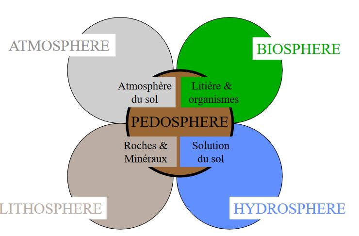

Les Facteurs édaphiques (I)
I) Introduction
A) Les facteurs écologiques
Facteurs écologiques = éléments du milieu susceptibles d'agir directement sur les êtres vivants, au moins durant une partie de leur cycle de développement.
Des facteurs écologiques agissent à tous les niveaux d'organisation des écosystèmes:
- individus (écologie des organismes ou autoécologie, écophyiologie);
- population (écologie des populations);
- communauté ou biocénoses (écologie systémique ou synécologie)
Pour qu'un sol se forme il faut minimum 1 000 ans. En zone tropical, les sols ont plus de 100 000 ans. C'est un compartiment fonctionnel de l'écosystème et une interface entre le monde vivant et minéral. C'est une source non- renouvelable à l'échelle de temps humain.
La fonction du sol est de recycler la matière organique, pour cela il faut une activité biologique. Les champignons et bactéries aident au recyclage.
-
Distinction courante
- facteur abiotique = ensemble des caractéristiques du milieu
- facteur biotique = ensemble des interactions qui se réalisent entre les individus de la même espèce ou non
-
Autre distiction possible:
- facteurs indépendants de la densité qui agissent sur les organismes avec une intensité qui ne dépend pas de leur abondance: en général, les facteurs abiotiques tels que les facteurs climatiques (T°C, lumière, pluviométrie...) ou édaphiques
- facteurs dépendants de la densité ont une action dont l'intensité augmente avec l'abondance des individus: en général, facteurs biotiques comme la prédation ou la compétition
B) Descripteur écologique
Descripteur écologique = tout élément ou toute condition caractérisant l'environnement
Descripteur écologique = tout caractère du milieu observé, relevé ou mesuré, qu'il agisse ou non directement ou indirectement, sur l'organisme, la population ou la communauté concernée.
Distinction :
- descripteurs qualitatifs (sans grandeur)
- descripteurs quantitatifs (variables quantitatifs chiffrées = statistiques applicables)
- descripteur semi-quantitatifs (s'ordonne selon un gradient)
1) Notion de facteurs limitants
Loi du minimum de Liebig (agronome-chimiste, 1840):
"La croissance des végétaux est limitée par l'élément dont la concentration est inférieure à une valeur minimale au dessous de laquelle les synthèses ne peuvent plus se faire."
Notion de facteur limitant:
Un facteur écologique joue un rôle limitant lorsqu'il est absent ou réduit au dessous d'un seuil critique ou bien s'il excède le niveau maximum tolérable.
Un processus écologique est limité par le facteur écologique le plus proche de son seuil minimal.
2) Limites de tolérances et optimum écologique
Loi de Shelford ou loi de tolérance:
"Pour tout facteur existe un domaine de valeurs dans lequel tout processus écologique sous la dépendance de ce facteur pourra s'effectuer normalement."
Chaque organisme, présente vis-à vis des divers facteurs écologiques des limites de tolérance entre lesquelles ce situe son optimum écologique.
C) Les facteurs édaphiques
Dans les écosystèmes terrestres, l'écologie factorielle distingue 2 grandes catégories de facteurs qui agissent sur la répartition des organismes vivants:
- les facteurs climatiques
- les facteurs édaphiques
Les constituants du sol qui ont une action directe sur les organismes (végétaux mais aussi micro-organisme et faune du sol) sont considérés comme des facteurs édaphiques.
Facteurs édaphiques concernent donc les propriétés physiques et chimiques des sols.
Facteurs édaphiques = facteurs écologiques qui se rapportent au sol, édaphon = sol)
- On parlera par exemple des exigences édaphiques d'une plante (ou d'une culture). Ces exigences résultent ou sont influencées par des facteurs inhérents au sol plutôt que par des facteurs climatiques ou autres.
Edaphologie:
-
Terme peu employé que certains identifient à la science du sol mais que la plupart affectent aux relations existantes entre le sol et la plante (ou le sol et une culture).
-
Elle concerne donc spécialement l'influence que peut avoir le sol sur le developpement des végétaux.
Ex: Les sols de la réserve biologique dirigée du Mont du Fresne
En bas de pente nous trouverons des colluvions. Très peu de calcium. Lorsque l'on monte sur la pente, on a un sol calcaire riche en calcium. Quand on monte sur le plateau, on trouve en profondeur des argiles à silex (craies décarbonatées). C'est un faciès de décarbonatation. Sur les plateaux, les limons apportés par les vents sont les Loess.
Ex: Les sols limoneux des plateux, Forêt de Lyons
Les strates herbacés sont indicatrices des conditions du sol
D) Définition du sol
Le sol constitue la couche extérieur de notre planète et se compose de roches et de matières végétales et animales en décomposition
Science du sol sensu stricto (ou science des sols) est une science très ancienne.
La pédologie est une discipline relativement récente:
- Origine : école russe de Vassili Dokutchaëv, fin du XIX e siècle
- Dokutchaïev : nature et répartition des sols liées à la roche sous jacente certes mais aussi au climat, au relief, aux agents biologiques (végétation, faune du sol et micro-organismes) et au temps.
Vision moderne de la pédogénèse : le sol n'est pas un milieu inerte et stable, mais il se forme et se developpe.
Le sol évolue sous l'influence du climat, du relief et des organismes vivants (végétation, pédofaune et micro-organismes) au dépend du matériel minéral (substratum géologique : matériel parental ou roche mère)...
Durant son évolution, le sol s'approfondit et se différencie en couches successives, ou horizons, de plus en plus nombreuses, épaisses et distinctes, dont l'ensemble constitue le profil.
"Le sol est la formation naturelle de surface meuble et d'épaisseur variable, résultant de la transformation de la roche-mère sous-jacente de divers processus, physiques, chimiques et biologiques" A Demolon
"Le sol est le produit de l'altération, du remaniement et de l'organisation des couches supérieurs de la croûte terrestre sous l'action de la vie, de l'atmosphère et des échanges d'énergie qui s'y manifestent."
Définition proposée par l'Association Française pour l'Etude du Sol:
"Le sol est un volume qui s'étend depuis la surface de la Terre jusqu'à une profondeur marquée par l'apparition d'une roche dure ou meuble, peu altérée ou peu marquée par la pédogénèse.L'épaisseur du sol peut varier de quelques centimètres à quelques dizaine de mètres ou plus. Il constitue, localement, une partie de la couverture pédologique qui s'étend à l'ensemble de la surface de la Terre. Il comporte le plus souvent plusieurs horizons correspondant à une organisation des constituants organiques et/ou minéraux (la terre).Cette organisation est le résultat de la pédogénèse et de l'altération du matériau parental. Il est le lieu d'une intense activité biologique (racines, faune et microorganismes)."
La pédologie est une science qui étudie les caractères physiques chimiques et biologiques des sols et leur évolution. L'agrologie est une science qui étudie les sols cultivés.
Le sol est une interface dans l'environnement, un compartiment des écosystèmes terrestres.

Composition moyenne du sol (% poids)

Composition moyenne du sol (% volume)